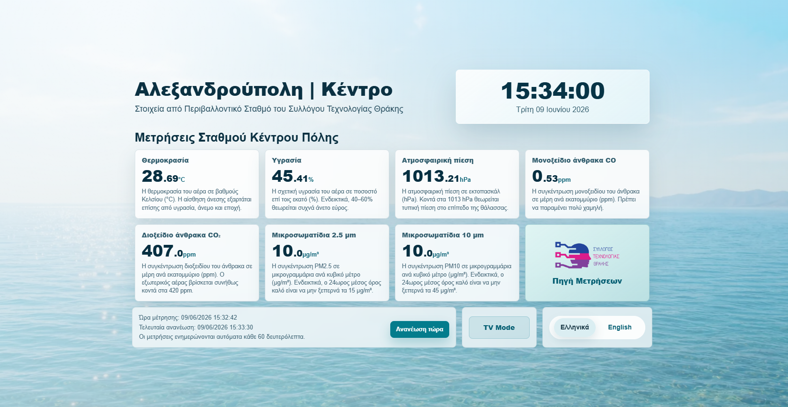
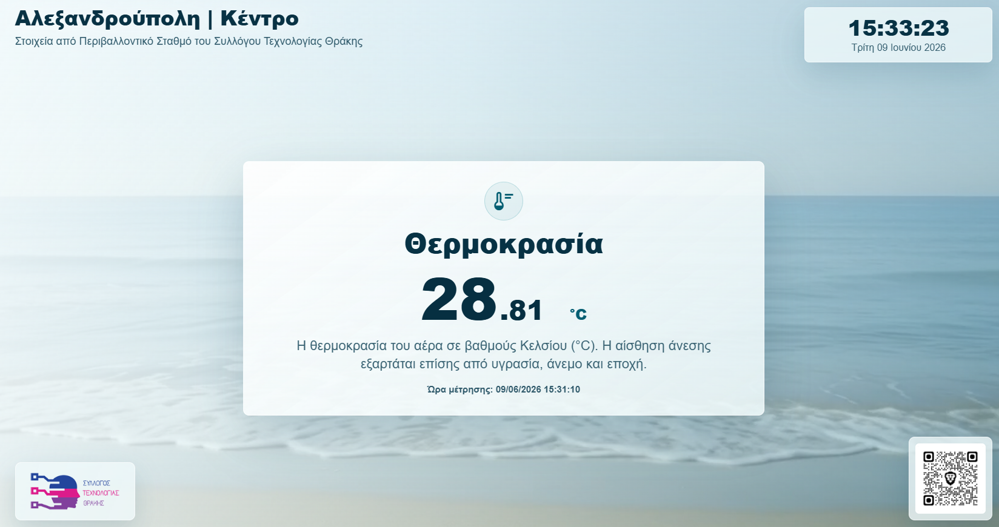

Responsive Dashboard
Προβολή των μετρήσεων σε υπολογιστές, tablets και κινητές συσκευές.
Αλεξανδρούπολη | Κέντρο
Εφαρμογή προβολής και τεκμηρίωσης τιμών που αντλούνται από Περιβαλλοντικό Σταθμό του Συλλόγου Τεχνολογίας Θράκης.

1. Περιγραφή Εφαρμογής
Είναι ένα σύστημα απεικόνισης, προβολής και τεκμηρίωσης των τιμών που αντλούνται από συγκεκριμένο σταθμό του Συλλόγου Τεχνολογίας Θράκης.
Στόχος της είναι να παρουσιάζει τις τρέχουσες μετρήσεις του σταθμού με απλό, κατανοητό και αξιόπιστο τρόπο σε δημόσιες τηλεοράσεις, σχολεία, χώρους αναμονής, γραφεία, ιατρεία και εκπαιδευτικές δράσεις.
Η πηγή των μετρήσεων πρέπει να παραμένει πάντοτε σαφής: οι τιμές προέρχονται από Περιβαλλοντικό Σταθμό του Συλλόγου Τεχνολογίας Θράκης και όχι από την ίδια την εφαρμογή απεικόνισης.
2. Βασικές Λειτουργίες
Προβολή των μετρήσεων σε υπολογιστές, tablets και κινητές συσκευές.
Ειδική έκδοση για τηλεοράσεις και μεγάλες οθόνες με κάρτες μετρήσεων.
Ελληνικά ως προεπιλογή και αγγλικά μέσω ξεχωριστών αρχείων μετάφρασης.
Προβολή κάρτας με τρέχουσα ώρα και ημερομηνία με timezone Europe/Athens.
Κάθε τιμή συνοδεύεται από σύντομη επεξήγηση μονάδας και ενδεικτικό πλαίσιο.
Η απεικόνιση κρατά εμφανή το λογότυπο, την πηγή και τον σύνδεσμο του σταθμού.

3. Αρχιτεκτονική και Εγκατάσταση
Η εφαρμογή αντλεί τις τιμές από ThingsBoard endpoint που αντιστοιχεί στον συγκεκριμένο περιβαλλοντικό σταθμό.
Τα πραγματικά στοιχεία σύνδεσης αποθηκεύονται στο config.php, το
οποίο δεν δημοσιεύεται στο GitHub.
Τα public tokens και οι telemetry απαντήσεις αποθηκεύονται προσωρινά στον
φάκελο private/ για μείωση φορτίου.
config.example.php σε config.php.config.php τα στοιχεία του ThingsBoard endpoint.config.php μόνο στον server.private/ πρέπει να είναι writable από PHP.4. Χρήση API για μικροελεγκτές
Εκτός από την οπτική απεικόνιση, η εφαρμογή παρέχει μικρά API endpoints για εκπαιδευτικές κατασκευές, ESP32, μικροελεγκτές ή απλές συσκευές που χρειάζονται συγκεκριμένες τιμές.
Το API δίνει μόνο whitelisted keys και χρησιμοποιεί το ίδιο server-side cache, ώστε να μην επιβαρύνεται άσκοπα η αρχική πηγή των μετρήσεων.
GET /api/v1/latest.phpGET /api/v1/latest.php?flat=1GET /api/v1/value.php?key=temperatureGET /api/v1/value.php?key=temperature&format=text
Επιτρεπόμενα public keys: temperature, humidity,
pressure, co, co2,
pm25, pm10.
Το παρακάτω παράδειγμα διαβάζει μία τιμή από το ελαφρύ API και την εμφανίζει σε μικρή OLED οθόνη. Είναι εκπαιδευτικό δείγμα και μπορεί να προσαρμοστεί για διαφορετικές οθόνες ή βιβλιοθήκες.
#include <WiFi.h>
#include <HTTPClient.h>
#include <Wire.h>
#include <Adafruit_GFX.h>
#include <Adafruit_SSD1306.h>
#define SCREEN_WIDTH 128
#define SCREEN_HEIGHT 64
const char* ssid = "YOUR_WIFI_NAME";
const char* password = "YOUR_WIFI_PASSWORD";
const char* valueUrl = "https://labschool.gr/iot-steth-axd/api/v1/value.php?key=temperature&format=text";
Adafruit_SSD1306 display(SCREEN_WIDTH, SCREEN_HEIGHT, &Wire, -1);
void setup() {
Serial.begin(115200);
WiFi.begin(ssid, password);
display.begin(SSD1306_SWITCHCAPVCC, 0x3C);
display.clearDisplay();
display.setTextColor(SSD1306_WHITE);
display.setTextSize(1);
display.setCursor(0, 0);
display.println("Connecting WiFi...");
display.display();
while (WiFi.status() != WL_CONNECTED) {
delay(500);
}
}
void loop() {
if (WiFi.status() == WL_CONNECTED) {
HTTPClient http;
http.begin(valueUrl);
int status = http.GET();
if (status == 200) {
String temperature = http.getString();
display.clearDisplay();
display.setTextSize(1);
display.setCursor(0, 0);
display.println("Alexandroupoli");
display.println("Temperature");
display.setTextSize(2);
display.setCursor(0, 28);
display.print(temperature);
display.print(" C");
display.display();
}
http.end();
}
delay(60000);
}5. Άδεια Χρήσης και Λειτουργίας
Η εφαρμογή δημοσιεύεται για εκπαιδευτική, ενημερωτική και κοινοτική χρήση. Η προβολή των τιμών πρέπει να διατηρεί καθαρή αναφορά στην πραγματική πηγή των μετρήσεων.
Δεν επιτρέπεται η αφαίρεση του λογότυπου, της πηγής ή του συνδέσμου του σταθμού, ούτε η παραπλανητική παρουσίαση των τιμών ως δεδομένα άλλης προέλευσης.